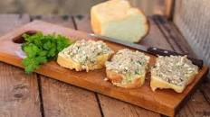
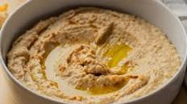

Receitas para Entradas
Comece a sua refeição com deliciosas opções de entradas para surpreender os seus convidados!

Patê de Sardinha
Área: Entrada
Dificuldade: Fácil
Tempo de preparação: 5min
Tempo total: 5min
Porções: 750 g
Ingredientes
- 25 g salsa
- 400 g queijo-creme
- 4 latas de sardinha em tomate picante
- 2 latas de sardinha em azeite
- 1 limão (sumo)
Preparação
- Pique a salsa finamente.
- Misture o queijo-creme, as sardinhas e o sumo de limão até obter um creme homogêneo.
- Acrescente a salsa e misture bem.
- Sirva com tostas ou pão.

Pasta de Grão-de-Bico (Húmus)
Área: Entrada
Dificuldade: Fácil
Tempo de preparação: 10min
Tempo total: 40min
Porções: 1 receita completa
Ingredientes
- 100 g grão-de-bico seco
- 1300 g água
- 1 c. chá de sal
- 1 folha de louro
- 2 dentes de alho
- 50 g azeite
- 1 c. sopa de tahine
- 20 g sumo de limão
- Páprica picante q.b.
- 1 ramo de salsa fresca
Preparação
- Deixe o grão-de-bico de molho de um dia para o outro.
- Escorra e cozinhe na água com sal e louro por 30 minutos.
- Processe com o alho, azeite, tahine e sumo de limão até obter um creme.
- Decore com páprica, azeite e salsa antes de servir.
Bolo do Caco
Área: Entrada
Dificuldade: Fácil
Tempo de preparação: 30min
Tempo total: 1h 50min
Porções: 8 unidades
Ingredientes
- 500 g água
- 2 c. chá de sal
- 100 g batata-doce cortada em pedaços
- 25 g fermento de padeiro fresco
- 1 dente de alho
- 370 g farinha tipo 65
Preparação
- Coza a batata-doce na água e escorra.
- Misture a batata com o fermento e o alho triturado.
- Adicione a farinha e o sal e amasse bem.
- Deixe levedar até dobrar de volume.
- Cozinhe cada porção numa frigideira quente por 4 minutos de cada lado.